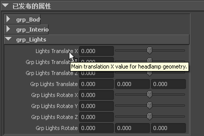

在本示例中，将为汽车模型资产设置模板，然后为汽车工作团队的成员创建不同的视图。
设置汽车资产
- 为汽车创建资产。请参见创建资产。
对于描制的汽车模型，资产会封装车身、车内、轴、灯光和车门的组节点。
- 重命名 Car_AST 资产。
- 将“平移”和“旋转”属性以及控制车轮自旋的“旋转通道”从所有节点发布到汽车资产。请参见发布或取消发布属性。
为汽车资产创建模板
- 通过选择“资产 > 资产编辑器”(Assets > Asset Editor)或“窗口 > 常规编辑器 > 资产编辑器”(Window > General Editors > Asset Editor)，打开“资产编辑器”(Asset Editor)。
- 在“资产编辑器”(Asset Editor)的左侧面板中，选择“Car_CNT”资产并单击“固定资产”图标
 。
。 资产的已发布属性将显示在右侧面板中。
- 要为汽车资产创建模板，请执行下列操作
- 在“资产编辑器”(Asset Editor)菜单栏上，选择“模板 > 另存为”(Template > Save As)。
文件浏览器将打开到当前项目的 assets 子目录。
- 在“文件名”(File name)字段中输入 Vehicle，然后单击“保存”(Save)。
模板保存在 assets 子目录中；模板名称目前显示在“资产编辑器”(Asset Editor)的顶部。
- 在“资产编辑器”(Asset Editor)菜单栏上，选择“模板 > 另存为”(Template > Save As)。
- （可选）使用选择的 XML 编辑器打开刚刚创建的 XML 模板文件。
默认模板将所有已发布的属性列入平面列表。在接下来的步骤中，将会添加视图并对模板文件进行其他编辑，从而帮助组织资产。
- （可选）关闭 XML 模板文件，然后继续。
创建模板视图
- 在“资产编辑器”(Asset Editor)的左侧面板中，选择汽车资产并单击“固定资产”图标 （如果尚未固定）。
- 在“资产编辑器”(Asset Editor)菜单栏上，选择“视图 > 添加”(View > Add)
 。
。 此时将显示“添加视图选项”(Add View Options)。
- 在“添加视图选项”(Add View Options)中，保持默认选项处于启用状态并输入 Modeler 作为“视图“名称”(Name)。完成后单击“应用并关闭”(Apply and Close)。（请参见为资产模板添加视图。）
模板切换为使用“资产编辑器”(Asset Editor)右侧面板中的新视图。新视图在“属性编辑器”(Attribute Editor)中也处于活动状态。
目前使用默认的“按节点分组”(Group By Node)布局来组织资产属性。每个属性组根据其父节点名称显示在相应标题下。
在接下来的步骤中，将会自定义 Modeler 视图。
自定义属性视图
- 打开选择的 XML 编辑器，然后导航以打开 XML Vehicle 模板文件。
- 使用 Modeler 一词搜索 XML 文件，以便定位到模板文件中已定义 Modeler 视图的部分。（请参见资产的各个部分。）
因为创建 Modeler 视图时“按节点分组”(Group By Node)选项处于启用状态，所以 XML 文件中的所有属性都将分组到“组名称”标题下。
在视图定义中，使用属性元素来表示每个已发布的属性。属性元素按名称与已发布的属性相对应。

- 自定义视图，直到视图能满足团队中建模美工人员的需求。（请参见自定义模板视图。）例如，您可以执行以下操作：
- 对于每个组元素，添加 <label> 元素可更改“属性编辑器”(Attribute Editor)中组的显示名称。
- 为每个属性元素添加 <Label> 元素，只会更改属性在该视图中的显示名称。 提示：
在向属性定义中添加元素时，请确保从属性元素中删除现有的末尾斜杠 /，同时确保向属性元素中添加闭合标记 </property>。
- 向各属性定义中添加 <description> 元素可创建工具提示帮助。

当资产您将鼠标指针悬停在“属性编辑器”(Attribute Editor)中的属性上时，会在各属性上方显示描述文本。
以上所有更改实现了界面的完全自定义，以供建模美工人员在处理汽车资产时使用。
- 更改完 Modeler 视图后，保存 XML 模板文件并关闭 XML 编辑器。
- 返回 Maya 并在“资产编辑器”(Asset Editor)中选择“模板 > 重新加载”(Template > Reload)以重新加载模板。（请参见重新加载资产模板。）
右侧面板中的已发布属性将会更新以反映所做的更改。更改也会反映在其他编辑器中，例如：“属性编辑器”(Attribute Editor)。

将 Vehicle 模板指定给另一个汽车模型
- 加载第二个汽车模型并为其创建资产。请参见创建资产。
- 重命名新资产 LowPolyCar_AST。
- 要将 Vehicle 模板指定到第二辆汽车，请执行下列操作：
- 打开“资产编辑器”(Asset Editor)，然后在左侧面板中选择 LowPolyCar_AST 并单击“固定资产”图标 。
- 在“资产编辑器”(Asset Editor)菜单栏中，选择“模板 > 指定 > 指定新模板”(Template > Assign > Assign New Template)。
- 在随即显示的模板文件浏览器中，选择 Vehicle 模板文件并单击“选择”(Select)。（请参见为资产指定模板。）
已将 Vehicle 模板指定到 LowPolyCar_AST 资产。现在，会在右侧面板中的“未绑定”(Unbound)标题下显示来自模板文件的已发布名称的列表。
- 打开“资产编辑器”(Asset Editor)，然后在左侧面板中选择 LowPolyCar_AST 并单击“固定资产”图标
- 展开右侧面板中的“未绑定”(Unbound)标题以查看来自模板的已发布名称的列表。
现在已经从模板中加载了汽车模型所需的已发布属性的名称，接下来就要开始将 LowPolyCar_AST 资产属性绑定到已发布名称。
- 要开始将属性从 LowPolyCar_AST 绑定到模板的已发布名称，请执行下列操作：
- 在“资产编辑器”(Asset Editor)的左侧面板中，从 LowPolyCar_AST 中选择一个属性。
- 在右侧面板中找到要用于属性的已发布名称，然后单击“绑定”图标
 。
。
现在已使用右侧面板中选择的已发布名称将左侧面板中选择的属性发布到 LowPolyCar_AST 资产中。“绑定”图标
变为“取消绑定”图标  ，表示现在已将已发布名称绑定到属性。当单击 以刷新“资产编辑器”(Asset Editor)时，绑定属性将移动并显示在“未绑定”(Unbound)列表的上方。
，表示现在已将已发布名称绑定到属性。当单击 以刷新“资产编辑器”(Asset Editor)时，绑定属性将移动并显示在“未绑定”(Unbound)列表的上方。 （请参见绑定/取消绑定属性或节点。）
- 继续从左侧面板中选择属性，并使用来自模板的名称发布属性或将属性与这些名称进行绑定，直到使汽车模型的所有必需属性发布到 LowPolyCar_AST。
现在，已完成 Vehicle 模板的设置。可以使用该模板来帮助创建其他汽车资产。所有汽车资产使用相同的已发布属性名称可以帮助确认是否所有的汽车模型都具有所需属性，同时也可以将相同的自定义视图指定到所有的汽车资产。